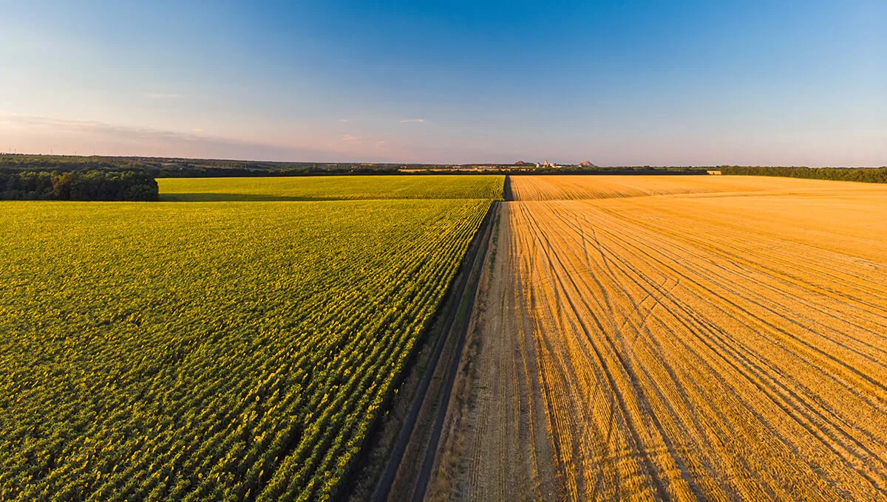

RATARSTVO
Početna
Ratarstvo
Stočarstvo
Voćarstvo
Mehanizacija
Ratarstvo je grana poljoprivrede koja se bavi gajenjem biljaka na obradivim površinama radi ostvarivanja biljne proizvodnje. Najviše je zastupljeno u područjima sa umerenom klimom i u poljoprivredno razvijenim krajevima.

Kulture
- Pšenica
- Kukuruz
- Industrijske biljke
Ratarstvo obuhvata:
- proizvodnju žitarica (pšenica, ječam, ovas, raž, kukuruz, heljda, pirinač i proso)
- proizvodnju industrijskih biljaka (kikiriki, uljana repica, konoplja, soja, pamuk, suncokret, hmelj, lan i duvan)
- proizvodnju krmnog bilja (repa, kelj, vijuk, ljulj, lucerka i detelina)
- povrtarsku proizvodnju